| 日付 | 2009年1月31日（土） - 2009年2月1日（日） | ||||
|---|---|---|---|---|---|
| 山域 | 八ヶ岳 | ||||
| メンバー | グループ（男4女5） | ||||
| 山行形態 | 1泊2日ホテル泊 | ||||
| アクセス | 電車、バス、ロープウェイ | ||||
| ルート (Map) |
|
2日目
6時半起床。ロープウェイは始発が9時なので朝はゆっくりできる。
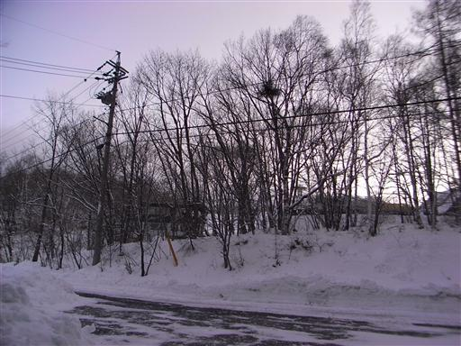
ピラタスロープウェイに乗って標高2200m地点までやってくる。
ここでスノーシューを履く。
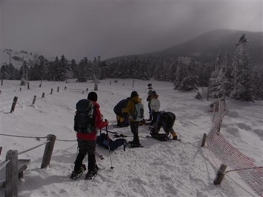
辺りは一面銀世界。早朝は少し曇っていたが、天気は回復傾向にあるようだ。
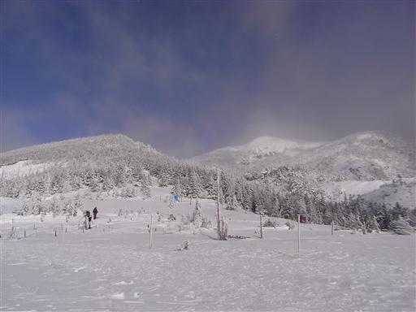
スノーシューを履いて散策開始。
ペンションのオーナーにガイドを頼み茶臼山展望台をめざす。

雪の表面は雪紋ができている。
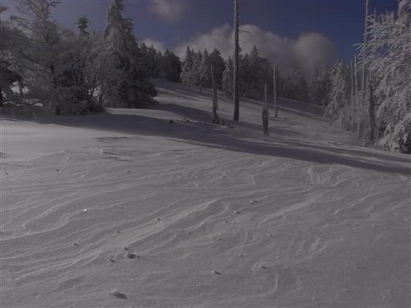
平原の中を歩いていく。スノーシューを履いていると、ほとんど体が沈まないので快適だ。
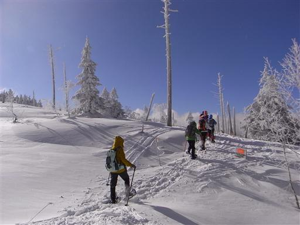
周囲の木々は針葉樹も枯木も真白に染まっている。
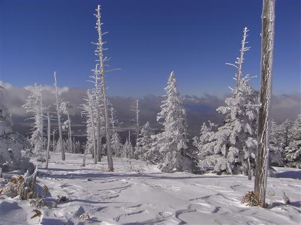
樹林帯に入る。両側から枝が覆い被さっているので、
気をつけて歩かないと上から雪が落ちてくる。
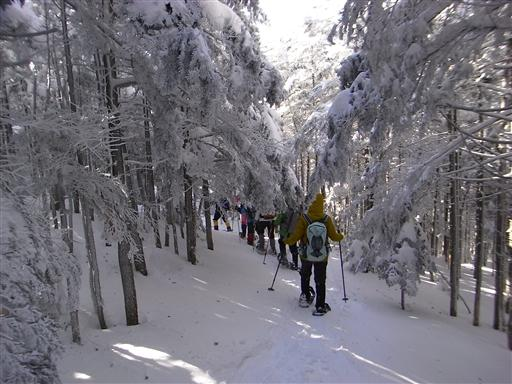
頭上は青空が広がっているが、北アルプス方面は雲がかかっている。
残念ながら白く染まった北アルプスは望めそうにない。
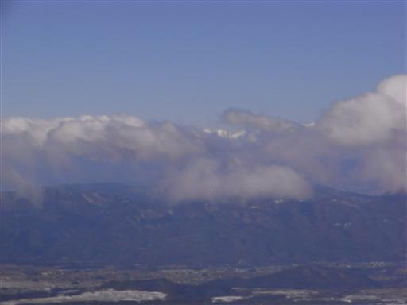
左手にめざす茶臼山が見えてきた。
標高差はほとんどないと思っていたが、意外に立派な山だ。
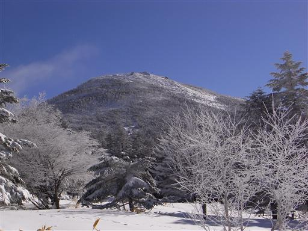
先頭は疲れるので、全員で時々交代しながら歩いていく。
道ははっきりしているが、踏み跡はまったくないきれいな雪だ。
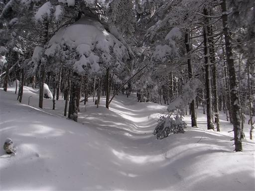
木の枝が真白に染まっている。
今日は背景が青空なので、白い雪がよく映える。
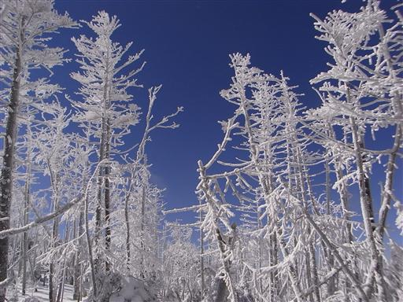
昼時になり、太陽が頭上に輝く。真白な世界なのでサングラスをかけていないと非常に眩しい。
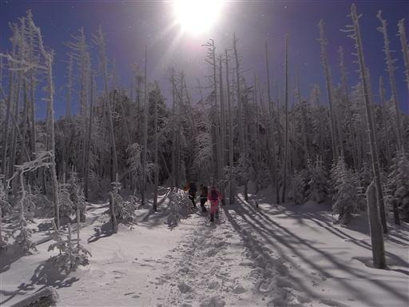
11:11 茶臼山山頂到着。標高2384m。
ここは樹林に囲まれ展望はないが、すぐ近くに展望台がある。
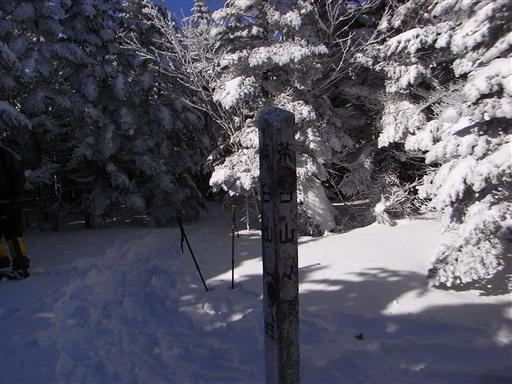
茶臼山展望台に到着。ここに来るのは1年3ヶ月ぶり。
相変わらず八ヶ岳の展望が素晴らしい。
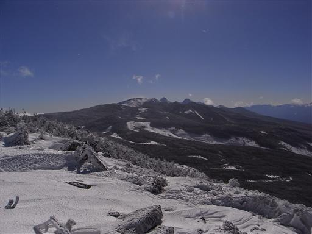
南アルプスの甲斐駒ヶ岳、仙丈ヶ岳、北岳が見えている。
前回来た時によく見えていた北アルプスは、まだ雲の中だ。
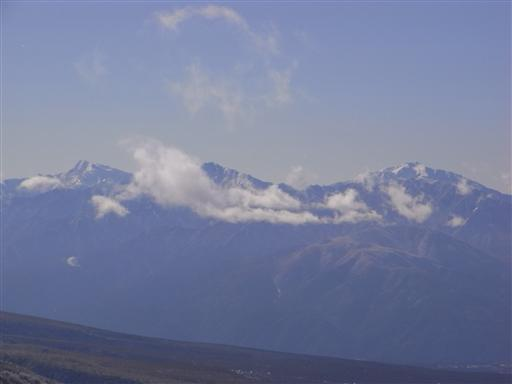
周辺は少し岩がちな地形でスノーシューだと歩きにくい。
風が強いからか、ここはあまり雪が積もっていない。
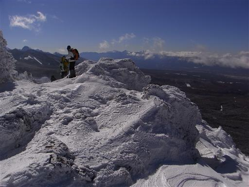
下界には黒々とした森が広がっている。
地面には雪が積もっているのだろうけど、一面真白にはなっていない。
八ヶ岳は日本海側の山々に比べるとはるかに雪が少ない。
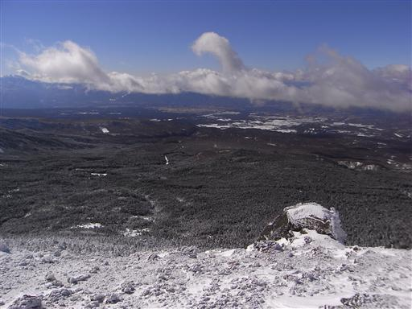
茶臼山を下山し、ピラタスロープウェイ山頂駅に戻ることにする。
帰りは往路から少し外れて、足跡のない雪原を適当に歩いていく。
下は笹原なので、スノーシューを履いていても所々で足がはまる。
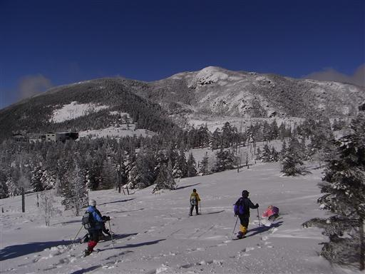
縞枯山荘に到着。可愛らしい形をした小屋だ。
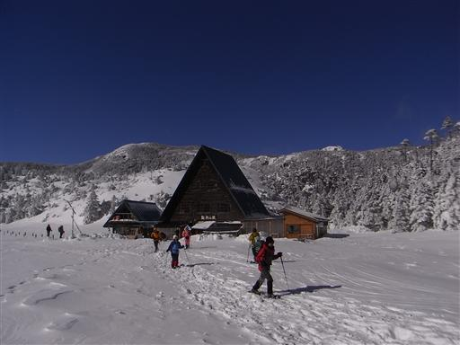
13:51 ピラタスロープウェイ山頂駅に戻ってくる。
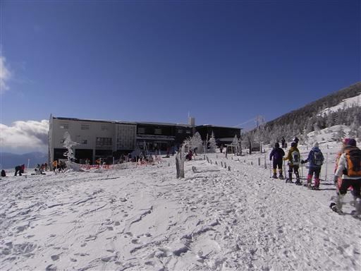
ロープウェイに乗って下山。眼下にはスキーやスノーボードで滑り降りている人々が見える。
帰りのロープウェイはがらがらだ。
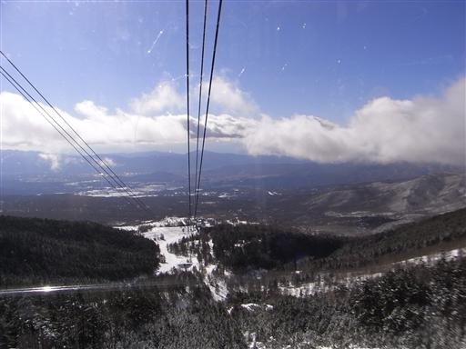
バスに乗って茅野駅まで戻ってくる。当然下界に雪は全くない。
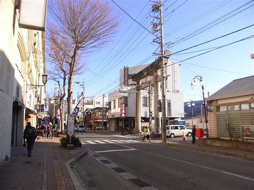
帰りの電車からは夕日を浴びる富士山がきれいに見えている。
心配していた天気だったが、初のスノーシューは見事な晴れだった。
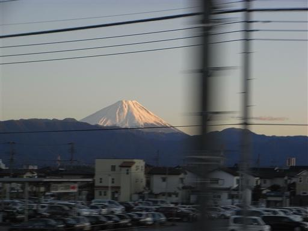